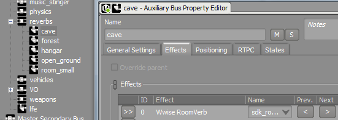
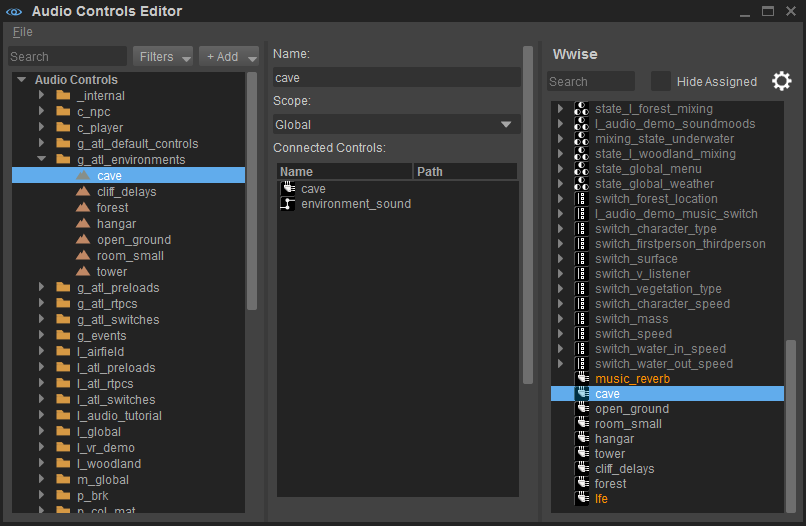
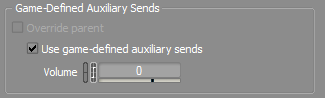

Обзор
В этом разделе описывается, как настроить реверберацию на уровнях. В CRYENGINE реверберация называется Environments. Чтобы узнать больше о средах аудиосистемы в CRYENGINE, загляните в главу Аудио и реверберация*.
Настройка реверберации в Wwise
Вы можете создать вспомогательную шину в Wwise и назначить на эту шину эффект, в нашем случае это будет реверберация.

После сохранения проекта используйте команду Редактор управления звуком для подключения вспомогательной шины Wwise к аудиосистеме. Вы можете использовать Форма области и Объект аудиообласти или Звуковая зона сущности, как описано в главе Аудио и атмосфера.

В Объект аудиообласти или Звуковая зона свойства, выберите Имя аудиосреды в среде аудиосистемы, подключенной к вспомогательной шине, и установите EnvironmentDistance. Это расстояние в метрах от края назначенной формы, где начинается затухание Среды (Реверберации).
После настройки среды (реверберации) в Объект аудиозоны или Звуковая зона свойства, звук отправляется на вспомогательное устройство в Wwise при приближении к прикрепленному Форма области.
Однако для того, чтобы эта функция работала, необходимо определяемые игрой вспомогательные посылы в Wwise должны быть включены (по умолчанию они отключены). Включение этой функции позволяет вам выбирать, на какие звуки должна влиять среда аудиосистемы (реверберация), а также настраивать (отдельно) объем отправки для каждого звука в Wwise.

Определенные игрой вспомогательные устройства можно найти в общих настройках игры. Редактор звуковых свойств в Wwise.
Помните, что вы также можете сопоставить параметры игры с аудиосистемой. Окружающая среда в редакторе управления звуком.